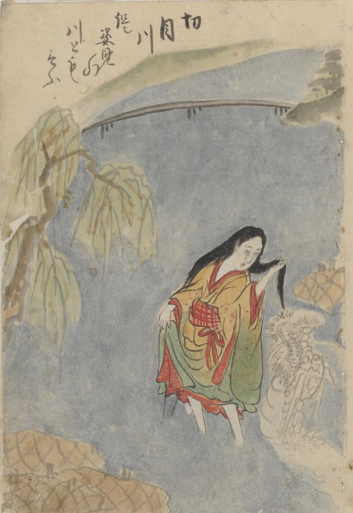

紀伊国の切目川に入る女性（清姫）。水面に映る彼女の姿は人間ではなく、巨大な蛇、龍である。
出典：親書誌：U426_nichibunken_0304：日高川鐘巻道成寺縁起；ヒダカガワ カネマキ ドウジョウジ エンギ／日付：2014／資源識別子：U426_nichibunken_0304_0001_0000
Copyright (c)2010- International Research Center for Japanese Studies, Kyoto, Japan. All rights reserved.